1.7. Shoebox Model-Part 5: Visualization of Results#
1.7.1. Visualize with Inkscape#
Go to this webpage and download the visualization template.
{kind=link}
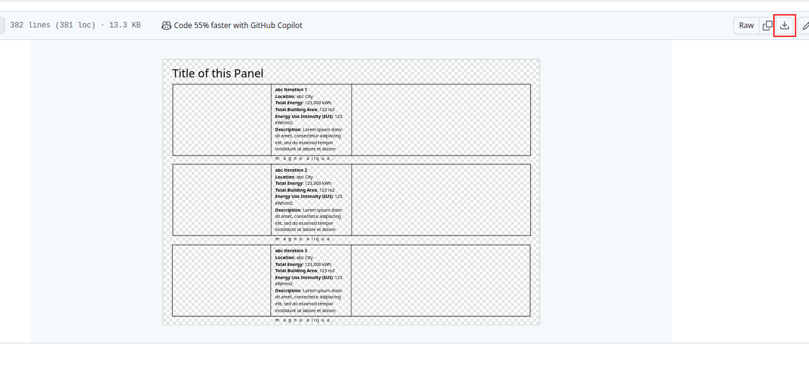
Open the ‘viz_template.svg’ with inkscape.
{kind=link}
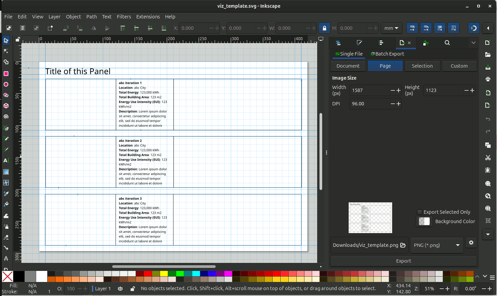
Turn on and off the Grid and Guide lines by going to View -> Page Grid and View -> Guides. Or shortcut key ‘Shift + #’ (toggle grid) and ‘Shift + |’ (toggle guides).
{kind=link}
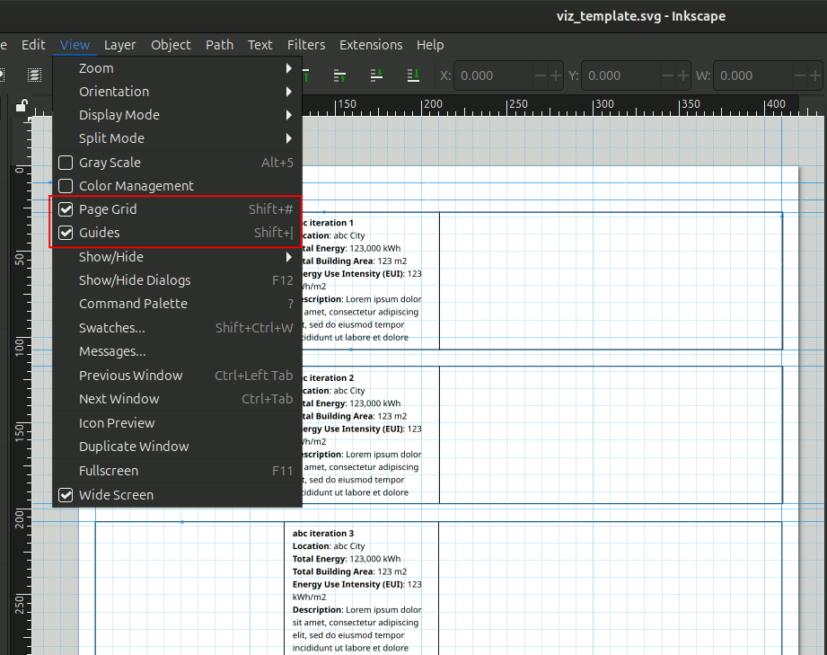
We want to add an image of the iteration to the template. We can grab an image by going back to the FreeCAD model. In FreeCAD, Go to View -> Perspective View. Adjust the view accordingly.
{kind=link}
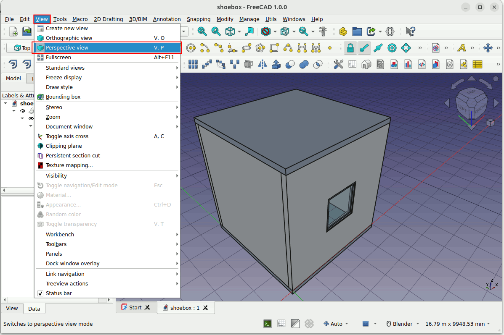
Go to File -> Print preview. To check if this is the view you want.
{kind=link}
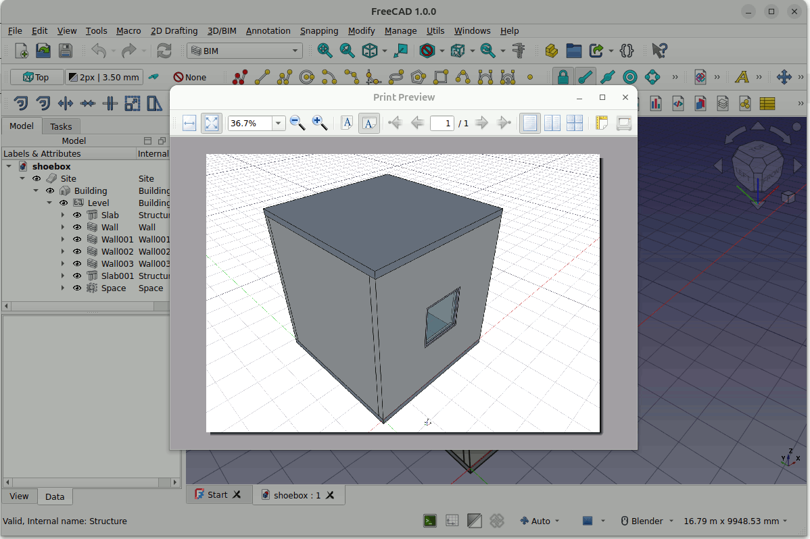
At the Print preview window click on the Print icon as shown below. The print window will pop up. Make sure to change the Name -> Print to File (PDF). You can specify the directory of the output file.
{kind=link}
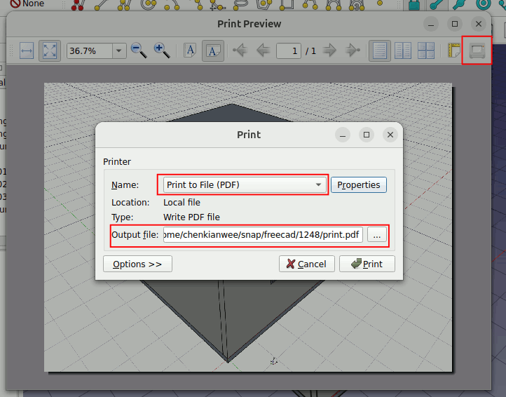
At the Print window you can click on Properties. In the Properties window you can decide how big you want your image to be by specifying the ‘Paper size’. In this case I specify it to be ‘A5’ size.
{kind=link}
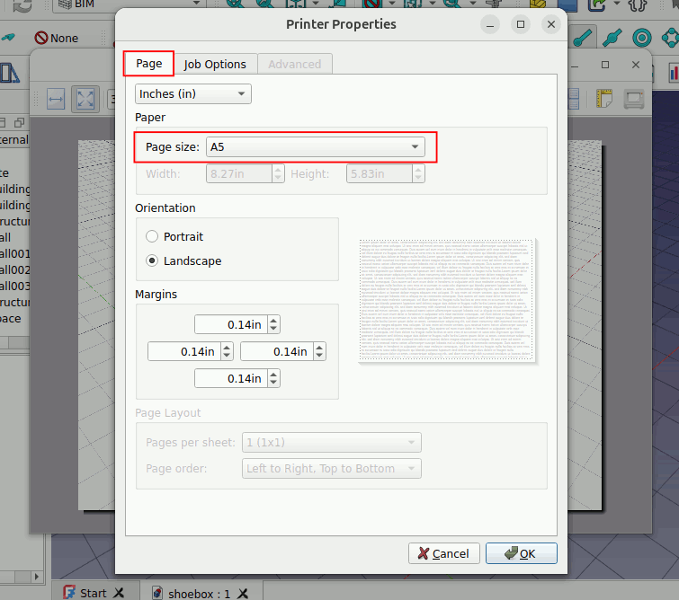
Once everything is set. You can click on Print to save the image.
{kind=link}
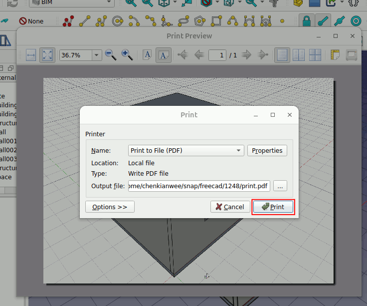
For some reason, Inkscape is not able to import the pdf exported by FreeCAD. We have to convert the pdf to png. Here I will be using Gimp to do the conversion. In Gimp, go to File -> Open and choose the exported pdf file. A Import from PDF window will pop up. Just click Import.
{kind=link}
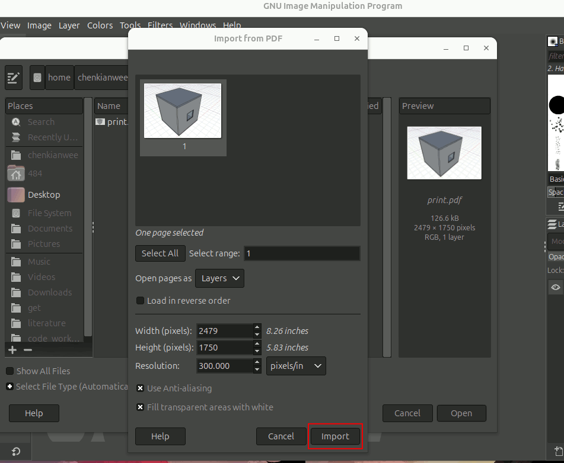
Once opened in GIMP. Go to File -> Export as. In the dialog box change the name of the file to filename.png. Export the image as a png.
{kind=link}
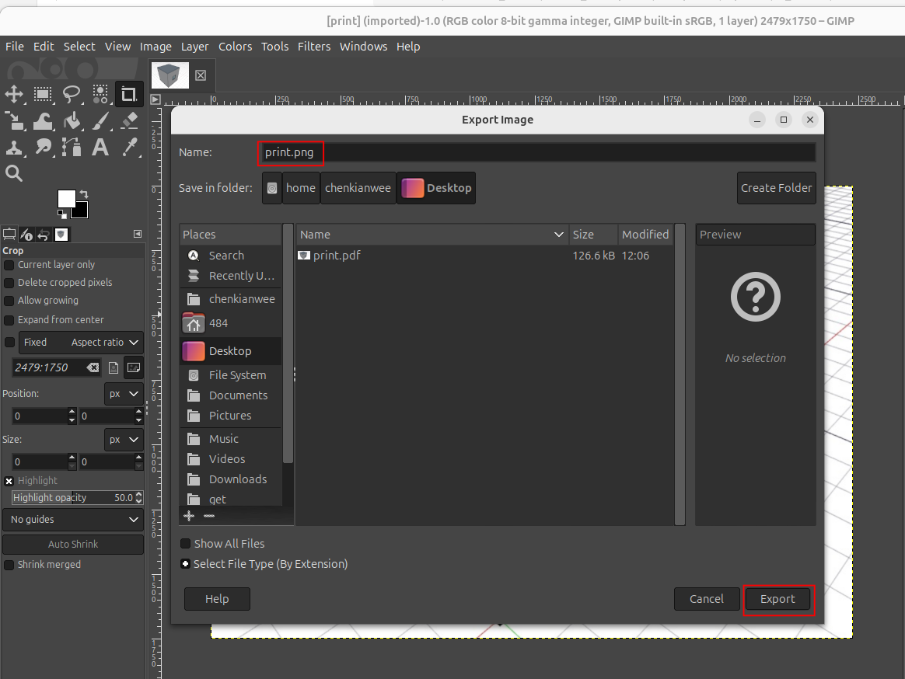
Import the image into Inkscape. In Inkscape go to File -> Import. Choose the image you want to import and click on Open. In the import dialog box choose Link.
Link: Inkscape is just referencing the image file and not storing it in Inkscape. So if you export and overwrite the image, Inkscape will automatically reflect that.
Embed: The image file is stored in Inkscape. The image and Inkscape is totally independent.
{kind=link}
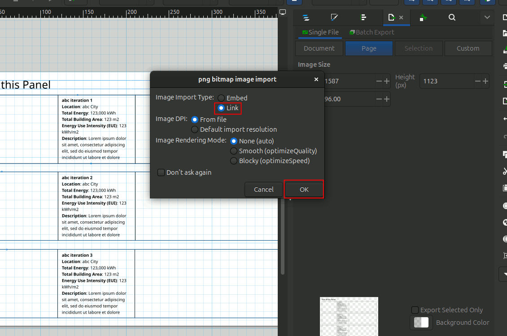
Click on the image and resize it to fit in the template as shown.
{kind=link}
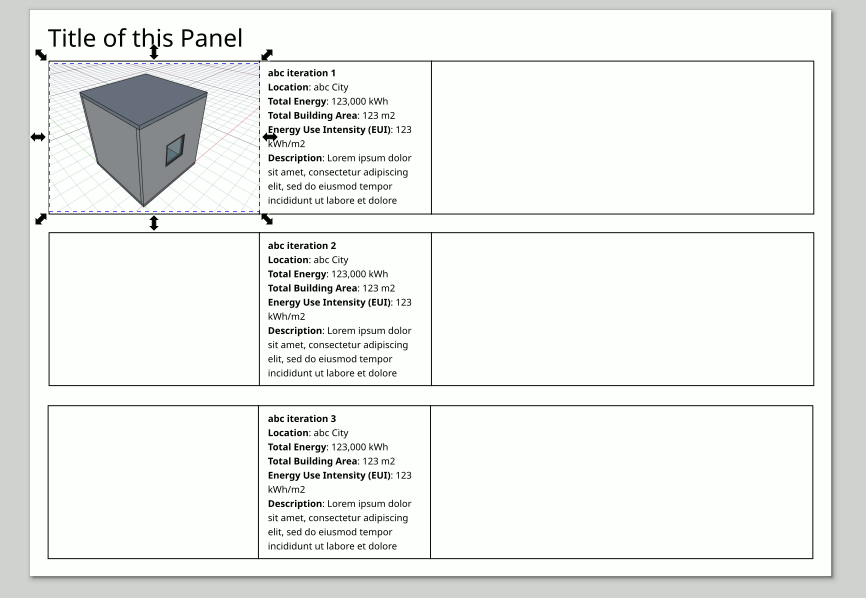
Now lets go to OpenStudio Application and grab the graph of the HVAC load. Go to the Results Summary tab, from the Reports choose ‘OpenStudio Results’. In the results window side bar, choose HVAC Load Profiles. Print screen the graph of the HVAC loads profile.
{kind=link}
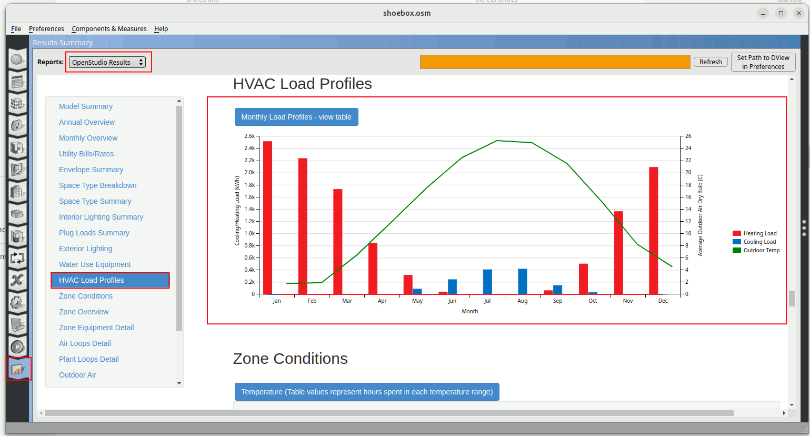
Import the image into the Inkscape svg visualization template.
{kind=link}
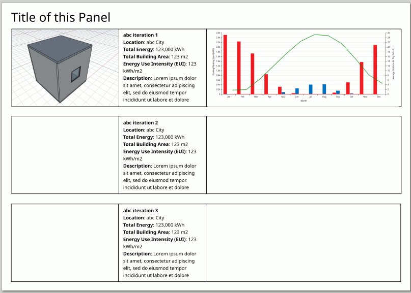
Remember to also import the legend so we can understand the graph.
{kind=link}
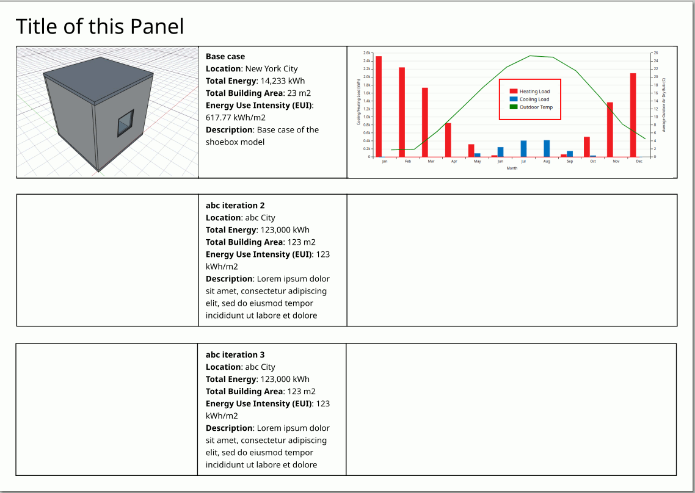
Now lets go to the OpenStudio Results Summary tab again and go to Model Summary.
{kind=link}
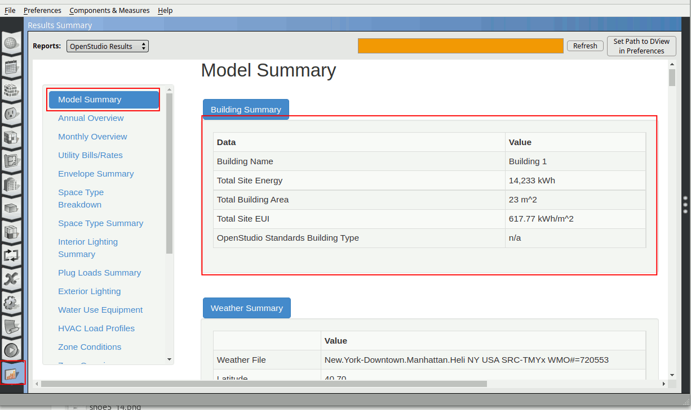
Go back to Inkscape. Let’s put this information in the description of visualization template. Double click on the text box of the first row and fill in as accordingly.
{kind=link}
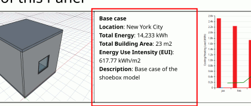
Lets change the title of the panel to ‘Shoebox Model Exploration’. Double-click on the title text box and change the title. Adjust it back to the position with help from guides (turn them on).
{kind=link}
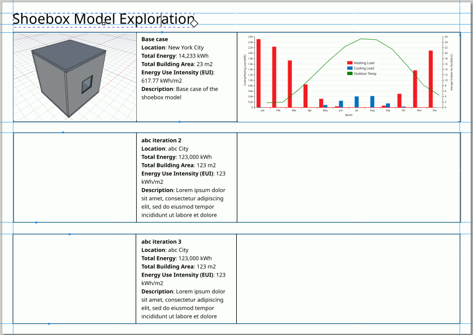
Congratulations!! You have successfully Model, Simulate and Visualize the shoebox model. Complete the template by varying design parameters like bigger window to wall ratio, thermal resistance and window u-value. So you can see how design parameters change HVAC performance.
{kind=link}
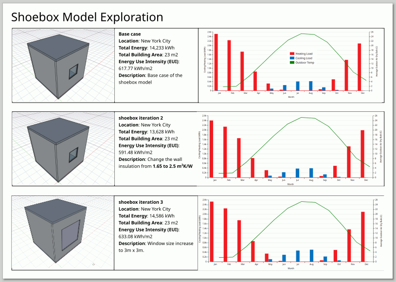